This codelab will teach you how to extend an existing Unity game to support Play Game Services on Android devices. In this section, we will set up the Unity environment with all of the materials you will need to complete this codelab.

What you’ll learn
- Development tools and configuration to build Unity projects targeted for Android.
- How to configure a game and application in the Google Play Console.
- How to add Google signin to your game.
- How to configure, add, and trigger achievements for your game.
- How to configure, add, and post scores to leaderboards for your game.
What you’ll need
- Android developer account (register at https://play.google.com/apps/publish/).
- An Android Device running Android 4.4+ (KitKat) or greater.
- Unity 4.6.1 or greater. The personal edition will work for this codelab.
- Android SDK (and have Unity pointing to the installation) including the latest Google Play Services SDK (found in the "Extras" section in the SDK Manager).
- The Play Game Services plugin for Unity
- Game assets: Lollygagger Sample game
- A USB micro to USB cable to connect the device to the computer.
Game Summary
For this codelab, we'll be using a simple and entertaining game, called "Lollygagger". The main game play is to travel along a path, atop a robot, shooting Lollipop "cannonballs" at the Androids that are lollygagging around. Key features of note are:
- Two different Unity scenes, one for the main menu, and one for game play.
- Shooting cannonballs at the targets, triggered by touch.
- Super flexible and simple game level logic to allow infinite possibilities of hours of fun!
How will you use use this tutorial?
How would you rate your experience with building Unity apps?
How would you rate your experience with building Android apps?
How would you rate your experience with Google Play Game Services?
First you need the Play Game Services plugin for Unity.
You can either download all the sample code to your computer...
...or clone the GitHub repository from the command line.
$ git clone https://github.com/playgameservices/play-games-plugin-for-unity.git
Next you need the unity asset package containing the sample game. You can download this here:
...or clone the GitHub repository from the command line.
$ git clone https://github.com/googlesamples/io2015-codelabs.git
First, let's build and run the game. From there, we'll add Play Game services.
Start Unity
- Start Unity! If you have not developed an Android application with Unity before, make sure you configure the Android SDK within Unity. In Unity, click Preferences > External Tools > Android SDK Location, then select the folder where you downloaded and unzipped the Android SDK.
Import the game assets
Import the sample game scenes and assets into your project:
- Click Assets > Import Package > Custom Package.
- Select the
lollygagger_step0.unitypackagefile you downloaded - Click Import.
Configure the Android player
- Configure Unity to build an Android application:
- Click File > Build Settings… to open the Build Settings window.
- Select Android in the platform list, if it isn’t selected already.
- Click the Switch Platform to make Android your default build target.
- Add the game scenes to the build:
- In the Project explorer, select the Assets folder.
- Drag and drop the
MainMenu.unityscene to the Scenes In Build list within the Build Settings dialog. - Then drag and drop the
GameScene.unityscene into the list underMainMenu.unity.MainMenu.unitymust be the first one on the list.

- Configure the Unity player settings:
- Click the Player Settings… button in the Build Settings window. This opens the PlayerSettings Inspector panel back in the Unity Editor.
- Click on the Resolution and Presentation section to expand it.
- Find the Default Orientation drop-down and set it to Landscape Left. This is the correct orientation for applications on a Project Tango device.

Configure Bundle and Code Signing
Still in the player settings, expand the “Other Settings” section by clicking on it.
Enter the bundle identifier. This identifier needs to match the application configuration in the Play Console (we'll look at that in the next step).
Enter a unique Bundle ID, this follows .Net namespace (or Java package) naming rules. Typically this is of the form: com.<yourcompany>.<appname>. 
At the bottom of the Player Settings, expand the Publish Settings section.
Make sure "Use Existing Keys" is checked.
Select the debug keystore that is created as part of Android Studio, or the Android SDK. For Mac/Linux this should be named $HOME/.android/debug.keystore
For Windows this should be named C:\Users\<USERNAME>\.android\debug.keystore
Enter the keystore password: android
Select the alias: androiddebugkey
Enter the password: android
Save and Run
- Save your project! Better safe than sorry :)
- Connect a device build and run! When prompted for a name for the APK file, enter Lollygagger.apk.
Congratulations! If you can play the starter project game on your Android device, you are now ready to achievements, leaderboards, and other Play Game Services that will help engage and retain your players.
Troubleshooting
Even the most simple things can have gotchas! Here are a couple and what to do about it. If you’re still having problems ask for help!
Issue
- I'm only seeing the Unity splash screen and then a blue screen with nothing happening
Solution
- Make sure you have added MainMenu.unity and GameScene.unity scenes to the Build settings

Issue: Error building Player: UnityException: Bundle Identifier has not been set up correctly
Solution: Set the bundle identifier to something other than the default. This is in the player settings > Other Settings section.
Create Your Game Project
Before your users can sign in and use Play Game Services features, you need to register your game with the Developer Console. In this section, you will create a Play Game Services project in the Developer Console and link it to your Unity project.
- Navigate to the Google Play Developer Console and sign in. If you don’t have an account yet, you will need to create one.
- Click Game Services and then click the Add new game button in the upper right.
- Select the tab titled ‘I don’t use any Google APIs in my game yet’.
- Enter ‘Lollygagger’ as the name of your game, and choose ‘Casual’ for the category. Click Continue.
- You are presented with the ‘Game Details’ screen. At the top you will see ‘Lollygagger’, and under that is your app ID (a 10+ digit number). Make a note of this ID, you will need it later.
- Using the toggle, turn Saved Games to ON. This is a very important step, you will need to have this feature enabled to complete the codelab.
- Finally, save your settings for this game by clicking on Save at the top of the form.
Link Your Android App
- Click on the Linked Apps tab in the left sidebar, then click Android. Note: If you don’t see a ‘Linked Apps’ button, resize your window to fullscreen or click the ‘hamburger’ button on the left-hand side.
- Under Package Name, put the Bundle Identifier you chose when setting up your Unity project (which you can find by opening File>Build Settings and clicking Player Settings). Make sure you use the same string in both places. Then click Save and continue.
- On the next screen, click Authorize your app now. You may be presented with a ‘Branding Information’ dialog. This is where you would control the information that appears on the sign-in screen, but we’ll skip this for now. Just click ‘Continue’.
- On the Client ID Settings dialog, you will be asked for a ‘Signing certificate fingerprint (SHA1)’. You will need to generate this from your Android debug keystore. Use the following
keytoolcommand (keytoolis part of the Oracle JDK and should already be installed on your machine in thebindirectory of your JDK):
# Replace $DEBUG_KEYSTORE with the location of your android debug keystore # which is normally $HOME/.android/debug.keystore on Mac/Linux and # C:\Users\<USERNAME>\.android\debug.keystore on Windows keytool -list -v -keystore $DEBUG_KEYSTORE -alias androiddebugkey -storepass android -keypass android
- Copy the
SHA1fingerprint from theCertificate fingerprintssection of the output. Then click Create Client. If you did everything correctly, you should see the message ‘Successfully linked your Client ID’, followed by a Client ID string. You won’t need this string, so don’t bother writing it down. - Click the Testing tab in the left sidebar. Then click Add Testers and add any Google accounts that you will be using to test this game. These should be the same as the accounts on your Android development device, and they should be Google+ enabled. If you are not sure if your account is Google+ enabled, go to plus.google.com and sign in as that account, you will be prompted to create a Google+ profile if necessary.
Now that you have created a game project in the Developer Console, you are ready to configure your Unity project to interact with Play Game Services.
Import the Play Game Services plugin
- Open Unity and import the Play Game Services plugin for Unity, click Assets > Import Package > Custom Package and select
current-build/GooglePlayGamesPlugin-*.unitypackagefrom theplay-games-plugin-for-unityfolder where you downloaded the Play Games Unity plugin. - Open the project in Unity and click Window > Google Play Games > Setup > Android Setup.... In the Application ID field, enter your app ID from earlier, then click Setup. If you are presented with a dialog about Google Play Services, click OK.
Setup the plugin for the Application
- Open the project in Unity and click Window > Google Play Games > Setup > Android Setup....
- In the Application ID field, enter your app ID from earlier, then click Setup.
- If you are presented with a dialog about Google Play Services, click OK.
Now that you have registered your game in the Developer Console, you are ready to start integrating Play Game Services into your app. In this section, we will add a sign-in button to your game’s main menu and authenticate the user for Google Play Games.
Initialize Play Game Services
We are going to start by adding sign-in functionality to the game’s main menu. First open the MainMenu.unity scene in the Unity editor. If you press Play, you should see the following:

In the Hierarchy, click on Main Camera. In the Inspector view on the right-hand side, scroll down to find the ‘Main Menu Events’ script component that is attached to Main Camera. Double click the script to open it in the editor. To initialize Play Game Services, we will need to add a Start() method, like this:
Make sure to add the using statements so that the necessary classes are defined. The code above will initialize the Play Games platform in your script with the saved games feature enabled.
Add the sign-in UI
Add a button to the GUI by right-clicking on Project at the bottom of your screen and selecting the Prefabs folder.
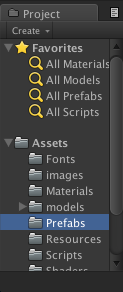
In the Prefabs folder find the signInButton prefab and drag it onto the Panel element of the hierarchy, like below:
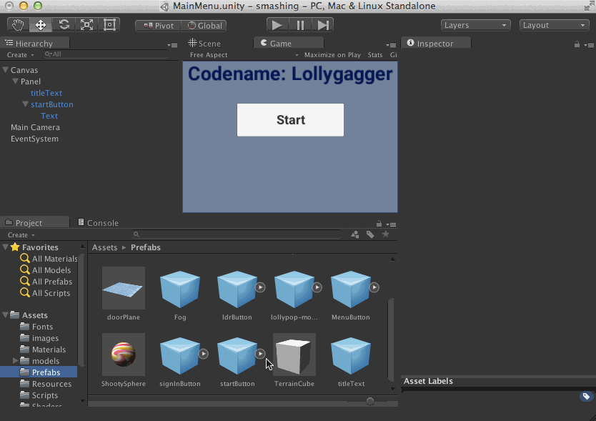
Now add the authStatus prefab to the hierarchy with the same click-and-drag method. Don’t worry if there is no visual result, the content of authStatus is currently the empty string, we will update the content in code. When you have added authStatus you should have the following hierarchy:
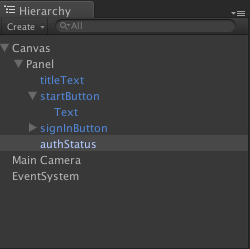
Add sign-in functionality
Re-open the MainMenuEvents script (attached to the ‘Main Camera’ object) where we activated the Play Games platform. Add a new SignIn function like below:
Now we have to link this function to the OnClick event of the button:
- Click on the signinButton in the Hierarchy to open the Inspector.
- Scroll down to the ‘On Click()’ panel and click the + button.
- From the Hierarchy, click and drag the Main Camera element onto the ‘None ...’ field in the button’s On Click panel.
- Then select MainMenuEvents > SignIn from the ‘No function’ dropdown.
These steps are illustrated in the clip below:
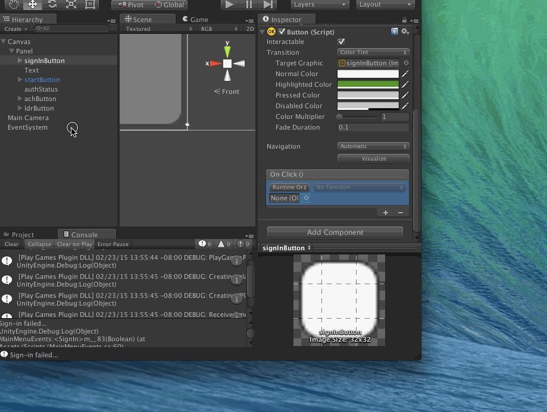
The final result should look like this:
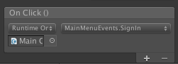
To ensure that you linked the event correctly, click Play in the Unity Editor and click the signinButton when the main menu loads. If you added the button correctly, you should see messages appear in the debug logs.
Now we will make the button actually useful. First we need to add some boilerplate to access the signInButton and authStatus elements from your code. Open the MainMenuEvents script and add the following lines:
First add member variables to reference the Text elements on the UI, paste them in the MainMenuEvents class at the top
using UnityEngine.UI;
public class MainMenuEvents : MonoBehaviour {
// ADD THESE TWO LINES
private Text signInButtonText;
private Text authStatus;
}
Next, add the code that assigns values to these variables by pasting these lines at the top of the Start() method:
Next, add a function called SignInCallback, and modify the SignIn function so that it matches the code below:
The code above implements both sign-in and sign-out, depending on the user’s state. However the code above only triggers sign-in when the user presses the sign-in button. We’d like to have returning users silently signed in when they open the app. Add the following line to Start() to attempt silent sign-in when the app is opened:
Test signing in
Now let’s test the sign-in process. This step requires you to run the game on your Android device.
- File >Build and Run the app.
- When the app starts, click the ‘Sign in’ button. Once you have accepted all of the consent screens, you should see the button text change to “Sign Out” and your name appear below the button.
Now that your users are signed in with access to Play Game Services, it is time to start adding awesome features to your game. In this section, we will add achievements to the game for hitting enemies and a UI for users to view their progress.
Create Achievements in the Developer Console
We are going to create two achievements for this game. One that rewards the user for shooting her first target, and another that rewards the user for shooting 10 total targets. The latter will be an “incremental” achievement, which means the user needs to take multiple steps to unlock it.
- Navigate back to the Lollygagger project in the Google Play Developer Console and click on the Achievements tab.
- Click on Add Achievement and enter the following information:
- Name: “Welcome to Lollygagger”
- Description: “Get your first hit!”
- Next click Save and add another achievement, then enter the following information for the second achievement:
- Name: “Sharpshooter”
- Description: “Get 10 hits!”
- Incremental Achievements: checked, 10 steps are needed
- Click Save to finish entering achievements.
You should now be at the Achievements screen, which will display the IDs of the two achievements you just created:
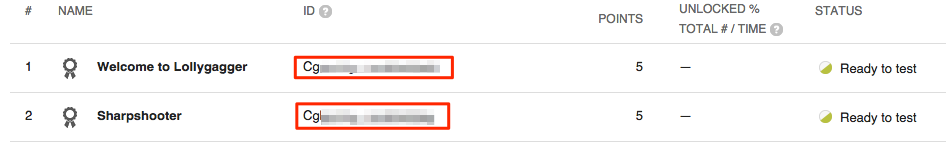
Make a note of these IDs, we will need them when unlocking/incrementing achievements in code.
View Achievements
Now that your game has achievements in the Developer Console, your players may want to be able to check their progress on all of the achievements in your game and see which achievements they have not yet completed. Let’s add a button to the main menu that brings up the achievements list UI.
First, let’s add the code to show achievements. Open the MainMenuEvents script and add the following function:
Now create an Achievements button in the MainMenu scene by adding the achButton prefab to the hierarchy in the same way that you added the signInButton prefab earlier:
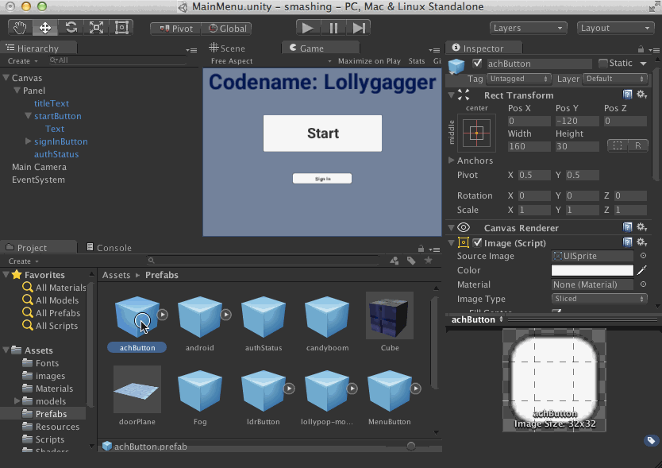
Finally, link the On Click event of the button to the ShowAchievements() method in the MainMenuEvents script, using the same method as you used to link the Sign In button to the SignIn() method:
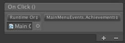
The last step is to configure the button not to display unless the user is signed in with Play Game Services. Modify MainMenuEvents to add the following code to Start(), SignIn(), and SignInCallback():
Now save your progress and ‘Build and Run’ the game on your Android device. When you sign in at the main menu you your UI should look like this:
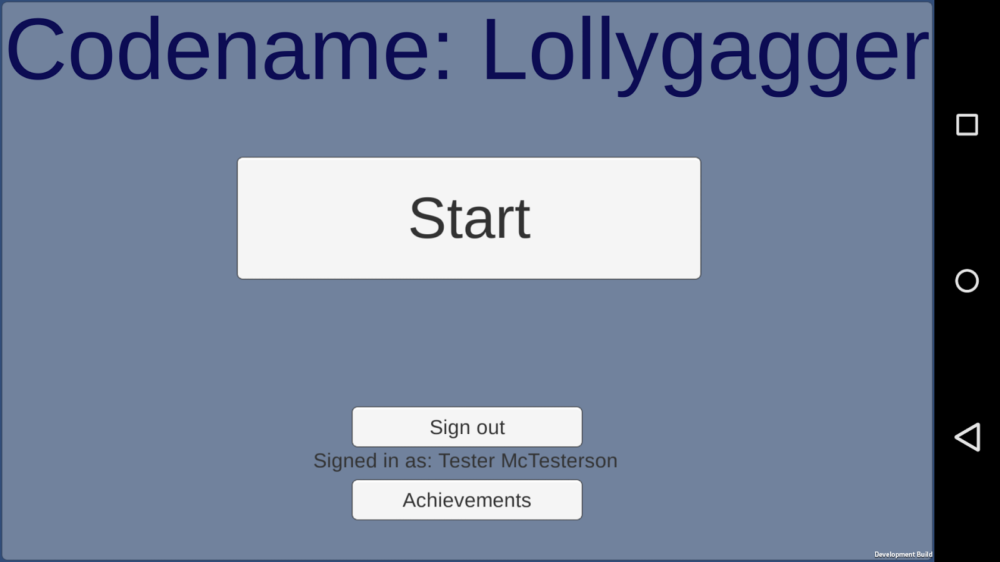
And after clicking ‘Achievements’, you should see a screen like this:
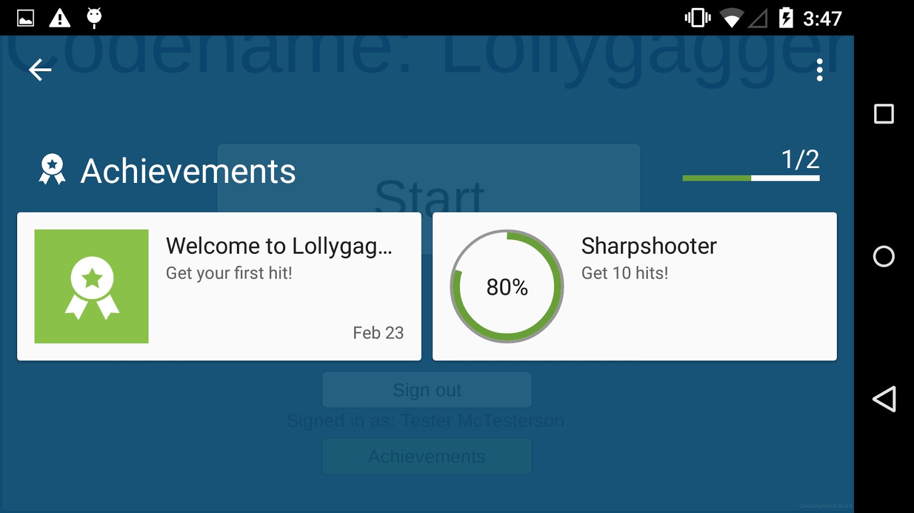
Now your users can check the status of their achievements at any time! If you add more achievements via the Developer Console, they will show up on this screen.
Trigger Achievements
Now that you can check the progress of your achievements, we need to add code to trigger them when the user hits targets in the game.
First, open the Shooting.cs script and add a tag to each projectile so we can track collisions:
Next, open the DroidController.cs script from the scripts folder and add the following variables and modify it to match the code below, making sure you enter your achievement IDs where necessary:
Now Build and Run the game on your Android device. At the main menu, first sign in then begin a game. When you hit your first (and later, 10th) target you will see an ‘Achievement Unlocked’ dialog appear at the top of the screen.
Congratulations!, you just got your first Play Game Services achievement!
Once you have finished adding achievements to your game, leaderboards are the natural next step. In this section, we will add a global high score leaderboard to the game and a UI for users to view their scores.
Create Leaderboards in the Developer Console
We are going to create one leaderboard for this game that tracks the number of targets hit in a single level.
- Navigate back to the Lollygagger project in the Google Play Developer Console and click on the Leaderboards tab.
- Click on Add Leaderboard and enter the following information:
- Name: “Targets Hit in One Level”
- Score Formatting: Numeric
- Number of Decimal places: 0
- Ordering: “Larger is better”.
- Click Save to finish entering leaderboards.
You should now be at the Leaderboards screen, which will display the ID of the leaderboard you just created:
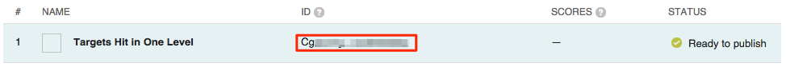
Make a note of this ID, we will need it when submitting scores in code.
View Leaderboards
Let’s add a button to the main menu that brings up the leaderboards list UI, just like the Achievements button we added earlier.
First, let’s add the code to bring up the leaderboards UI. Open the MainMenuEvents script and add the following function:
Now create a button in the main menu scene by adding the ldrButton prefab to the hierarchy in the same way that you added the achButton and signInButton prefabs:
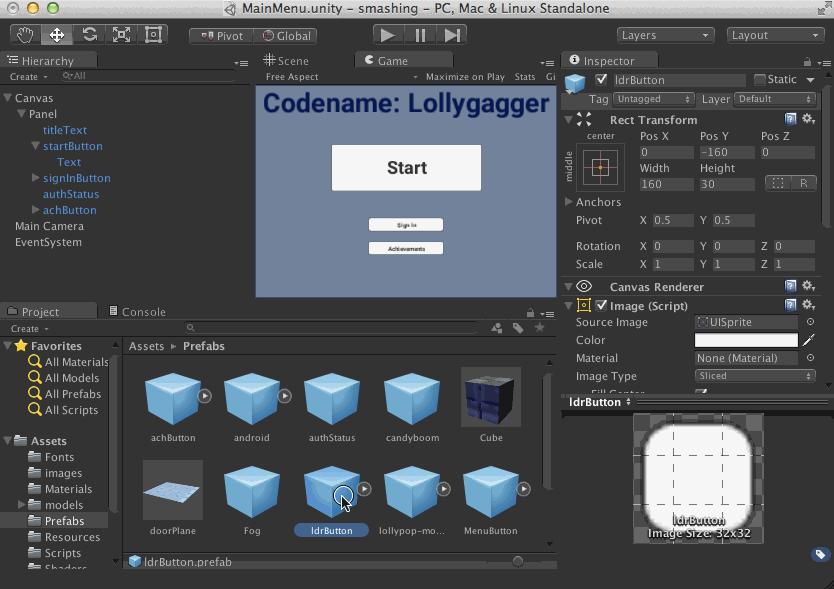
Finally, link the On Click event of the button to the ShowLeaderboards() method in the MainMenuEvents script, using the same method as you used to link the Achievements button to the ShowAchievements() method:
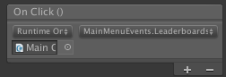
The last step is to configure the button not to display unless the user is signed in with Play Game Services. Modify MainMenuEvents to add the following code, mimicking the code used for the Achievements button:
- Declare the member variable ldrButton
- Initialize ldrButton by calling GameObject.Find()
- Initially set ldrButton to inactive
- Update the active state of ldrButton in Update()
Now save your progress and ‘Build and Run’ the game on your Android device. When you sign in at the main menu you your UI should look like this:
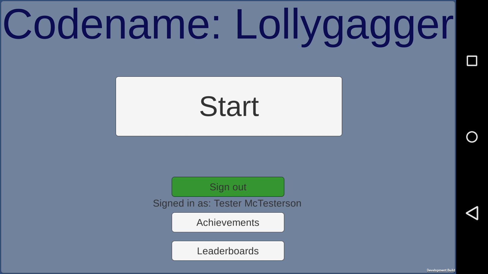
And after clicking ‘Leaderboards’ and then clicking on the ‘Targets Hit in One Level’, you should see a screen like this:
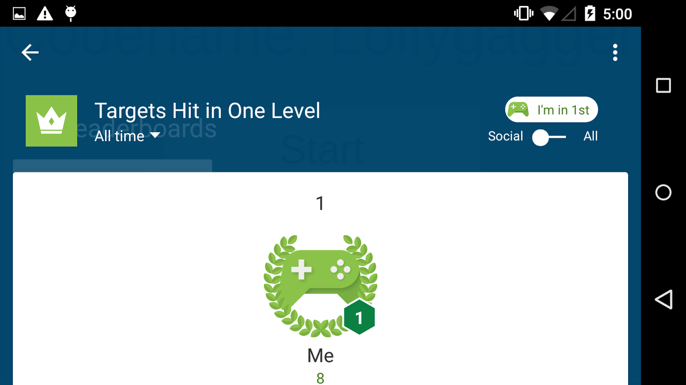
Now your users can check the status of the leaderboards at any time! If you add more leaderboards via the Developer Console, they will show up on this screen.
Update Leaderboard Scores
We will update the user’s score at the end of each level, rather than with each enemy killed in order to cut down on the number of requests we have to make to the leaderboards API. First, let’s add some accounting to keep track of targets hit. Open GameManager from within the scripts folder and add the following code, modifying RestartLevel and NextLevel and adding IncrementHits:
Then open DroidController and add a call to IncrementHits in the collision logic:
Now that we are keeping track of the user’s hits, we will add the code to update the leaderboard. Open GameManager, adding a TARGETS_HIT_ID variable and modifying the ShowEndMenu function using the code below (make sure to replace the TARGETS_HIT_ID):
Run the game on your Android device and play a level (make sure you hit a few targets!). This will submit a score to the leaderboard.
Go back to the main menu and hit the Leaderboards button to check your score and make sure the submission was successful!
Pat yourself on the back! You just added sign-in, achievements, and leaderboards to your Unity game. That’s only the beginning of the cool features Play Game Services has to offer. This section will show you how to use the saved games API to persist game data to the cloud and share it across devices.
Enable Saved Games
Enabling saved games involves two steps: turning the feature on in the Developer Console, and enabling the feature when activating the platform in your code.
First, navigate back to the Lollygagger project in the Google Play Developer Console. In the Game Details tab, confirm that turn Saved Games is turned to ON and matches the image below (you should have done this earlier). Then click the blue Save button at the top of the screen.
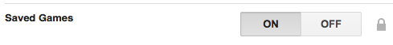
Enable Saved Games API
Next, open the MainMenuEvents script and edit the Start method to enable saved games on your PlayGamesClientConfiguration:
Now Build and Run your app and try to sign in. If you get the ‘Sign In Failed’ message, this is due to caching the game configuration in Google Play Services. Re-open your game and attempt to sign in again, if it succeeds then you have successfully enabled saved games.
Save Your Score
Writing data to the saved games API is a two-step process. The first is opening the saved games ‘snapshot’ where you would like to save the data. The second is writing to the file, and committing the update. Open GameManager and add the following code which adds the ReadSavedGame and WriteSavedGame functions:
Now let’s modify ShowEndMenu to update the total number of targets hit at the end of each level by calling WriteUpdatedScore():
Finally, we need to implement WriteUpdatedScore:
Now let’s see if it all worked. Run the game on your device, and on your machine run:
adb logcat | grep "Lollygagger"
Play a level and hit some targets. At the end of the level, you should see some Logcat output like this:
I/Unity ( 5911): (Lollygagger) Saved Game: Reading I/Unity ( 5911): (Lollygagger) Leaderboard update success: True I/Unity ( 5911): (Lollygagger) Saved Game Read: Success I/Unity ( 5911): (Lollygagger) Saved Game Binary Read: Success I/Unity ( 5911): (Lollygagger) Old Score: 0 I/Unity ( 5911): (Lollygagger) mHits: 7 I/Unity ( 5911): (Lollygagger) New Score: 7 I/Unity ( 5911): (Lollygagger) Saved Game Write: Success
If you play again, you will see that the score increases over time (rather than re-setting every level). You may be thinking “big deal, all I did was persist an integer and I had to write a ton of code!”. So far, you would be right. But now let’s demonstrate the real power of Saved Games. Uninstall the game from your Android device, then re-install the game from Unity. After you sign in and play through a level, your scores will be intact! This will work across devices as well, as long as you sign in with the same Google account.
Exercise: Post High Scores
If you made it all the way here, you are well on your way to becoming a master of Play Game Services. This section will be an exercise for you to see what you have learned:
Create a new leaderboard called “All Time Hits”, and update it every time you write a new score to the saved games API.
If you complete this task, you will be able to display all time hit counts for all of your users, even combining hits from multiple devices! Pretty cool, right?
Now that you’ve finished the code lab, there are a few more things you can do before you are ready to publish your awesome game. This section will describe what is left and point you to some resources where you can continue learning.
Publishing Requirements
Your game is currently in the ‘Ready for Testing’ state, but you need to fill in some more metadata on the Google Play Developer Console in order to publish the game. Here is a list of what you still need to do:
- Add More Achievements - we only added two achievements in this codelab, but the minimum for publishing is five. Add some more cool achievements, like “Hit 2 targets in one second” or “Complete 3 levels”.
- Add Icon Images - you will need to add icons for your game, as well as for each achievement and leaderboard. Adding unique images for each achievement is a great way to delight the user.
- Link Your Production Keystore - right now you only have one ‘Linked App’, and it is tied to your debug keystore. If you want to publish on the Play Store, you will need to add another Linked App that has the SHA1 of your production keystore.
More Features
There are many more great features of Play Game Services that were not covered by this codelab such as: